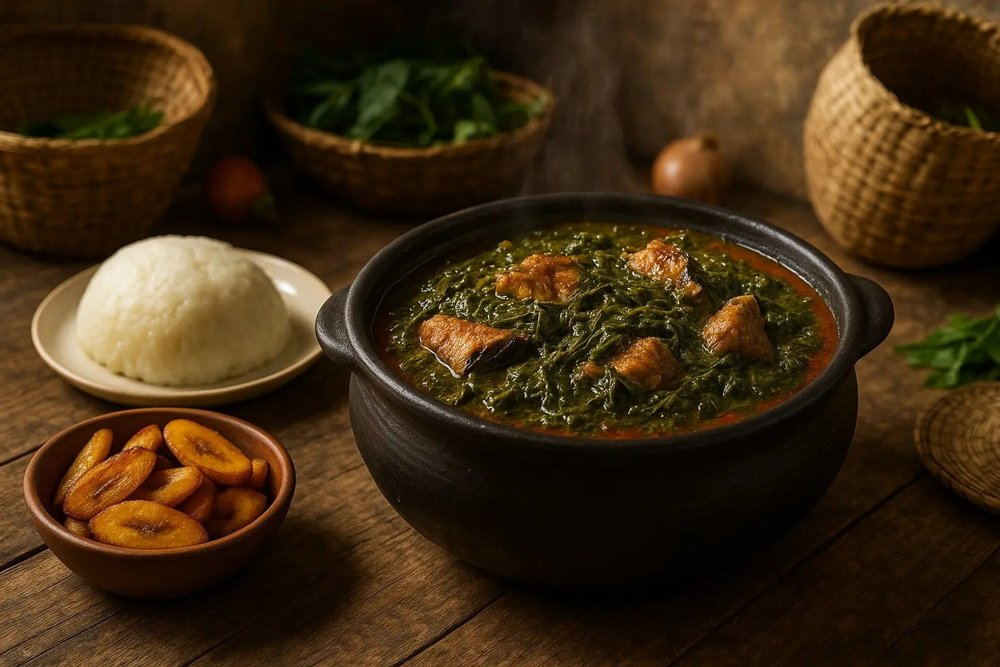
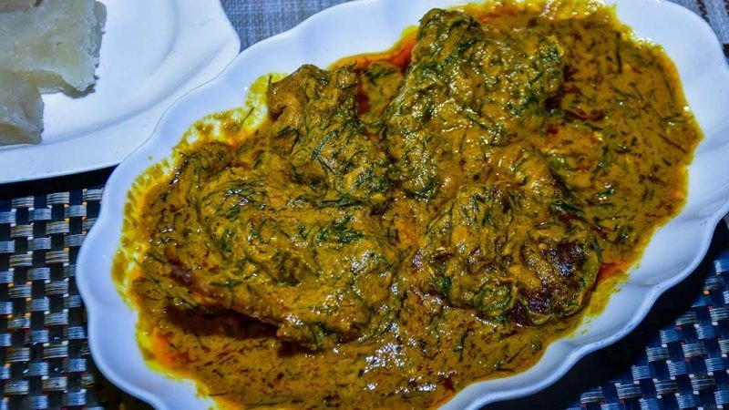
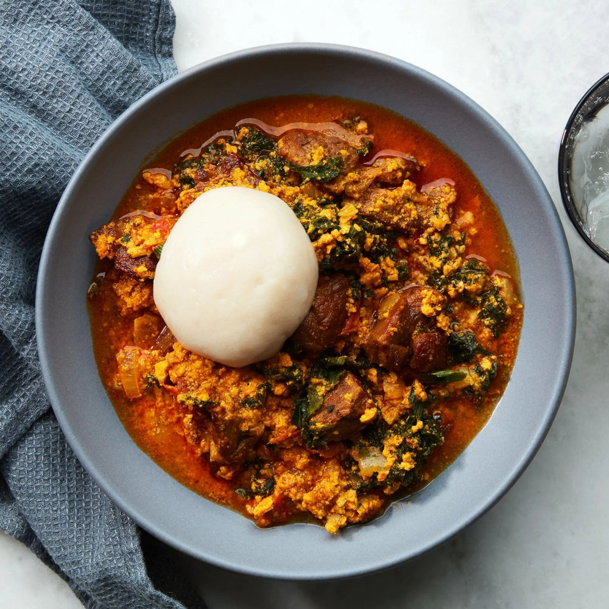

Elfenbeinküste
Eine rote, cremige Palmnusssoße mit Fleisch, Räucherfisch und Krabben, serviert mit Kochbananen-Foutou oder Reis.



← Zurück zu den Rezepten

 ElfenbeinküsteGarba
ElfenbeinküsteGarba